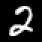

Soundness of the SROIQ-to-SDD compiler and the mixture representation result are machine-checked in Lean 4.
Abstract
OWL 2 DL ontologies, grounded in the description logic $\mathcal{SROIQ}$, express large knowledge bases in biomedicine and the Semantic Web. Neuro-symbolic (NeSy) learners over description logics either embed the ontology in a continuous space, abandoning classical entailment, or restrict to the Horn fragment $\mathcal{EL}^{++}$, which has a single canonical model. We present Baobab, which compiles a $\mathcal{SROIQ}$ ontology with a finite ABox into a Sentential Decision Diagram (SDD): it saturates a propositional core under a consequence-based calculus and instantiates the remaining $\mathcal{SROIQ}$ features (nominals, number restrictions, and the role axioms) over the active domain. The SDD's evidence-conditioned weighted model count then trains a perception network to recognize real images under partial ABox supervision: on an ontology that exercises every distinctive $\mathcal{SROIQ}$ feature, a CNN learns to read MNIST digits coupled by a successor relation and recovers latent ontology concepts that an independent perception leaves at chance. When the supervision admits several ontology-consistent completions, an independent perception collapses onto one, a reasoning shortcut: we show that a mixture indexed by the query's justifications can represent the calibrated posterior no independent perception can, and that seeding it from the circuit's enumerated completions attains the Bayes-optimal posterior on a real-image MNIST task where single-WMC and learned mixtures (the BEARS-ensemble hypothesis class) do not: to our knowledge the first to characterize and mitigate reasoning shortcuts in a non-Horn description logic. Soundness of the compiler and the representation result are machine-checked in Lean 4. Code is available at https://github.com/bio-ontology-research-group/baobab.
Problem
Neuro-symbolic learners over OWL 2 DL either abandon classical entailment via embeddings or restrict to the Horn fragment. A method is needed that keeps classical SROIQ semantics end-to-end while training perception under partial supervision, and that handles reasoning shortcuts in non-Horn description logics.
Approach
Baobab compiles a SROIQ knowledge base with a finite ABox into a Sentential Decision Diagram by saturating a propositional core under a consequence-based calculus and grounding the remaining SROIQ features over the active domain. The SDD's evidence-conditioned weighted model count serves as a differentiable training loss for a CNN perception network. A mixture indexed by a query's justifications is used to recover the calibrated posterior. Soundness of the compiler and the representation result are formally verified in Lean 4.

Figure 1: The Baobab workflow. Compile time (once per ontology): the five stages above produce an SDD. Training loop : a shared CNN reads the coupled individuals a,b (real MNIST digits) into per-atom posteriors that weight the SDD leaves; the evidence-conditioned WMC is the differentiable loss.
Results
On an ontology exercising all distinctive SROIQ features, the WMC-trained CNN reaches near-perfect digit and latent-atom accuracy (0.99/1.00) versus chance for independent perception. The justification-anchored mixture attains the Bayes-optimal posterior on an underdetermined MNIST task where single-WMC and learned mixtures do not.
regime
method
digit
latent
viol
grounded (#RS=1)
Independent
0.25
0.49
0.80
grounded (#RS=1)
WMC
0.99
1.00
0.02
under-det (#RS=5)
Independent
0.20
0.46
0.93
under-det (#RS=5)
WMC
0.18
0.67
0.78
Grounded and under-determined regime results (digit, latent, violation, ECE).